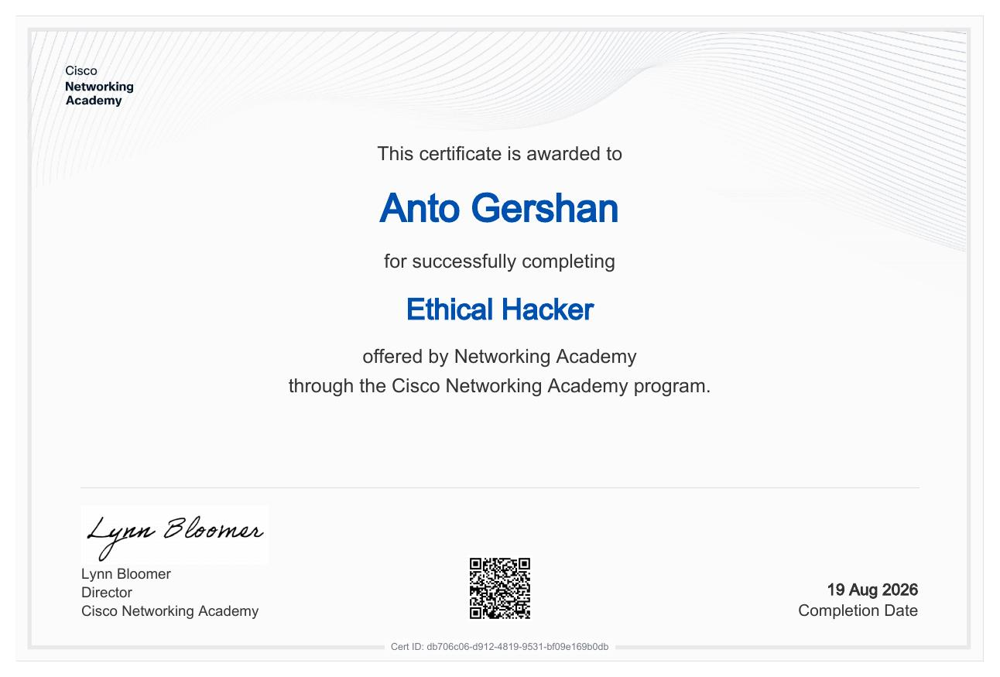
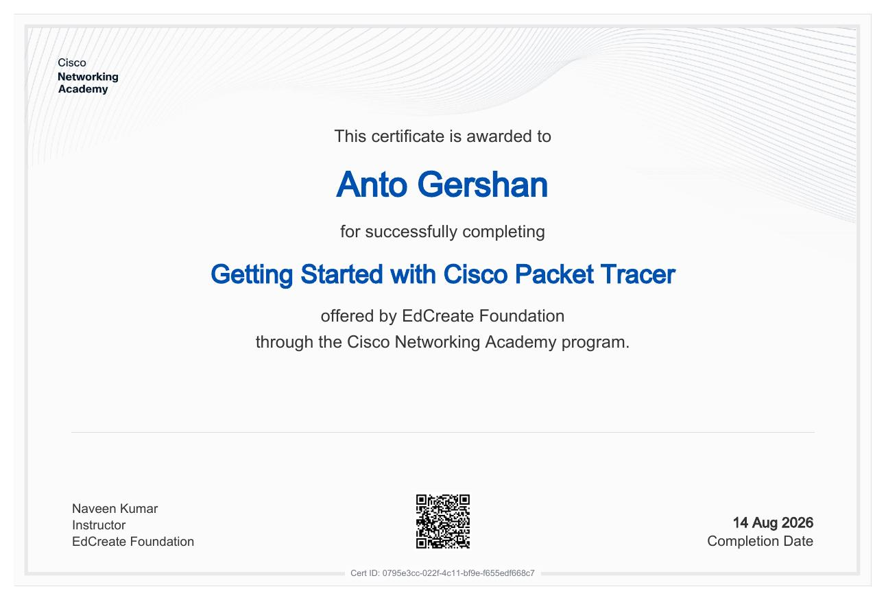
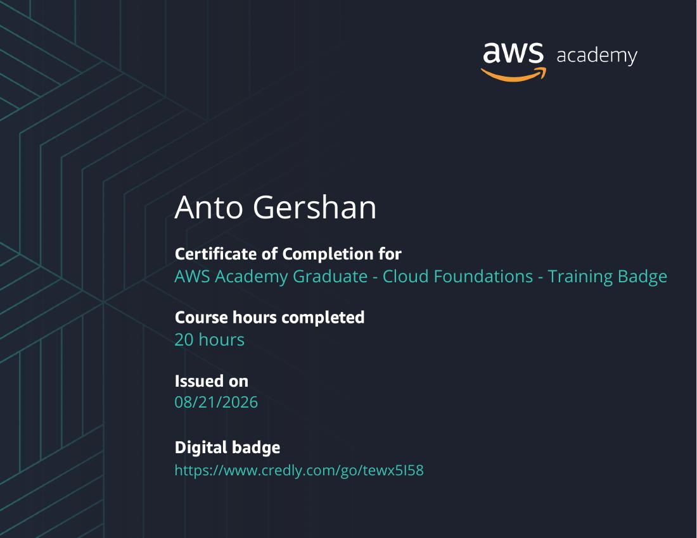
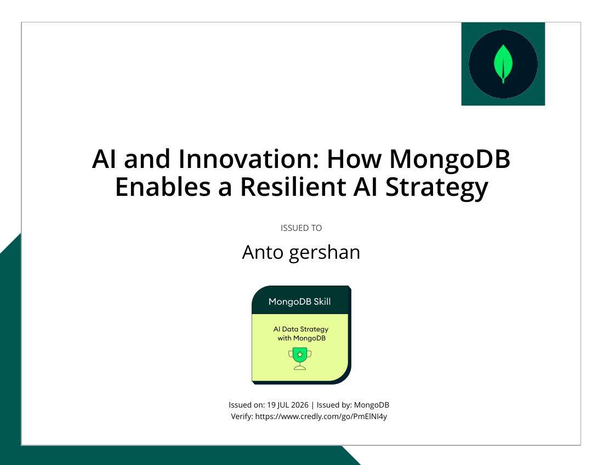
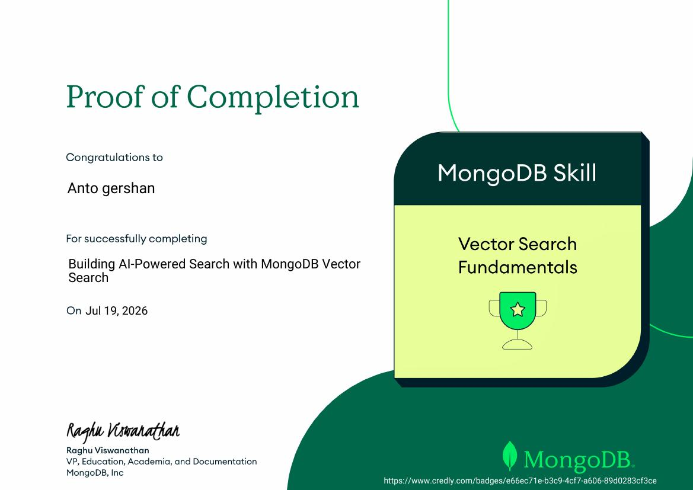
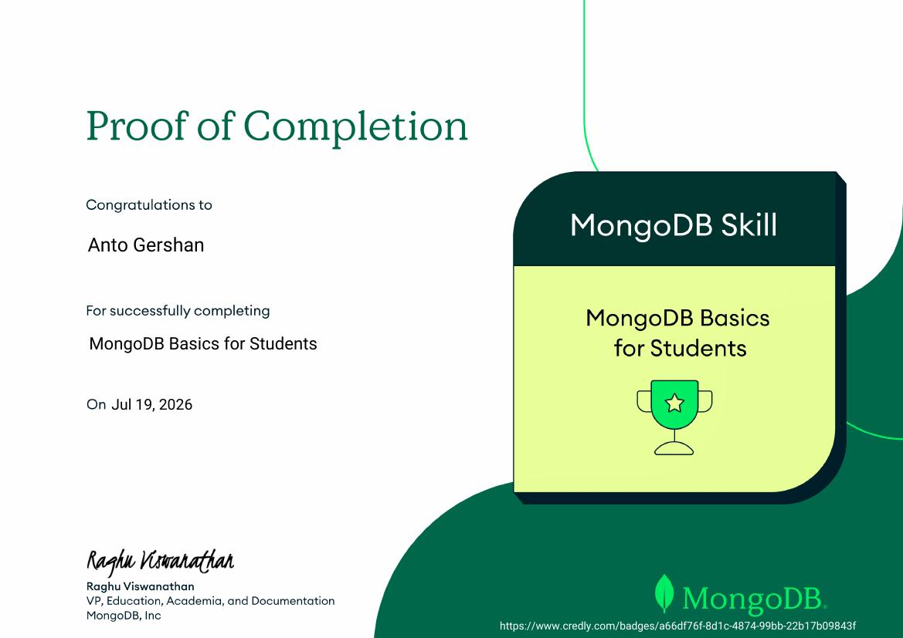

Cybersecurity
Hands-on areas I’m actively developing through labs, coursework and practical builds.
B.Sc. Computer Science student specializing in Cyber Security at SRM Institute of Science and Technology. I build practical security projects, explore offensive security and turn what I learn into usable systems.
I’m a Computer Science student specializing in Cyber Security, driven by hands-on learning and practical experimentation.
I enjoy understanding how systems work, exploring how they can fail, and building solutions that make them safer. My current focus is penetration testing, security tooling, secure development and AI-assisted security workflows.
My goal is to gain real-world exposure through a cybersecurity internship, contribute to meaningful security work and grow toward a professional security analyst role.
$ whoami anto-gershan $ specialization cyber-security $ focus penetration-testing secure-development ai-security $ status OPEN_TO_INTERNSHIPS
Hands-on areas I’m actively developing through labs, coursework and practical builds.
A growing collection of security, software and AI builds.
Flask-based malware analysis workflow combining feature extraction, Random Forest classification, confidence and risk scoring, secure uploads and scan history.
View build context ↗Digital healthcare platform concept for medical records, appointments, prescriptions and health analytics.
View on GitHub ↗Flutter/Dart application project exploring practical application development and AI-assisted workflows.
Case study coming ↗React frontend with Node.js/Express backend for an automated media-editing workflow.
Case study coming ↗Worked on an AI-Based Malware Detection System Using Flask, combining Python, machine learning and security-focused application features.
Feature extraction and malware classification workflow
Random Forest machine learning approach
Secure file upload and scan-history workflow
Authentication, 2FA and encryption/decryption concepts
Risk score and confidence presentation
B.Sc. Computer Science • Specialization in Cyber Security • Ramapuram Campus, Chennai
Every card opens the original certificate file. Credly badges are linked where available.
 OPEN PDF ↗
OPEN PDF ↗ OPEN PDF ↗
OPEN PDF ↗
OPEN PDF ↗
OPEN PDF ↗
CREDLY ↗
CREDLY ↗ CREDLY ↗
CREDLY ↗
CREDLY ↗
CREDLY ↗Intercollegiate tech-fest competition with team leadership and presentation.
Certificate of Appreciation at VANIK UTSAV’26.
Cybersecurity, development, AI and practical security labs.
I’m open to learning, contributing and gaining real-world cybersecurity experience.